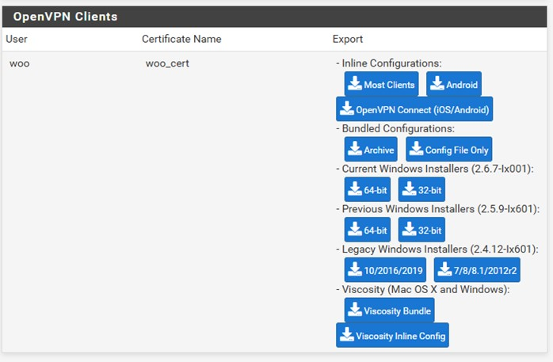
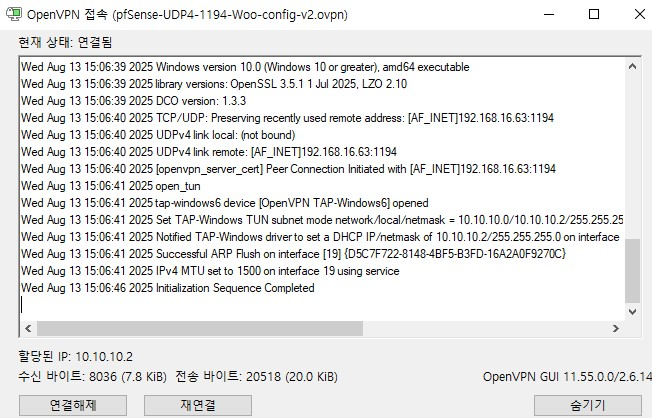
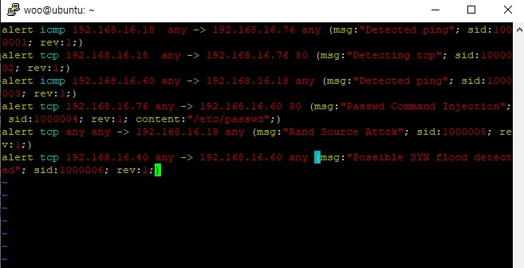
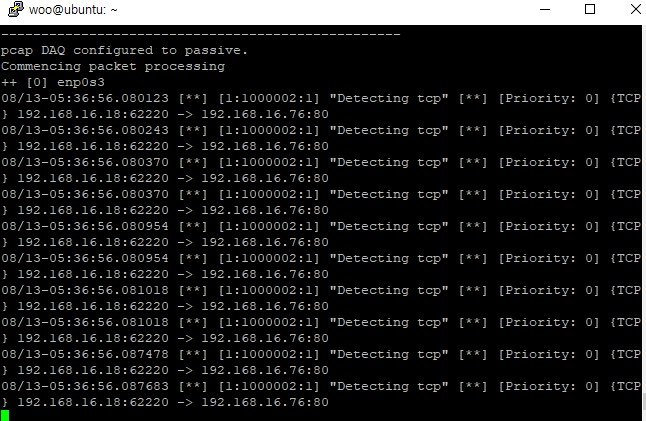
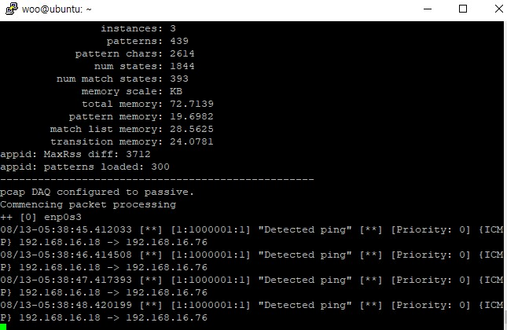
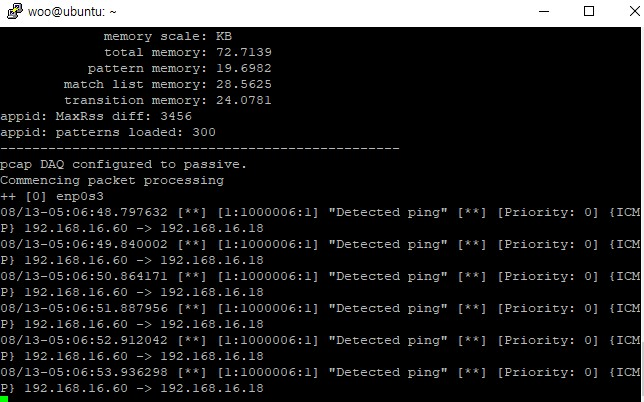
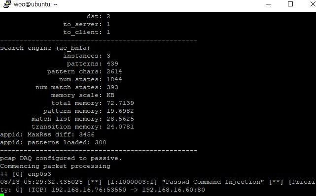

GNS3와 VirtualBox 이용한 보안구축
[GNS3 포폴로지]
적용한 Firewall Rule
[openVPN구축]
pfsense웹접속->openvpn->wizard->CA생성, 서버인증서 생성, OpenVPN서버 설정->System-User Manager-add->방화벽 룰 설정
->Client Export-Ubuntu용 .ovpn파일 다운로드->userID, PWD입력해 openVPN접속

[Snort rule]
[1. Win10->OSSEC : http, ping탐지]
[2.CentOS7->Win10 : ping 탐지]
[3. HIDS->CentOS7:/etc/passwd/command Injectioon 공격 탐지]
[4. Kali->Win10 : Rand Source Attack DDos 공격 탐지]
[5. Kali->CentOS7 : SYN Flag Scanning 탐지]
 ← 프로젝트 목록으로 돌아가기